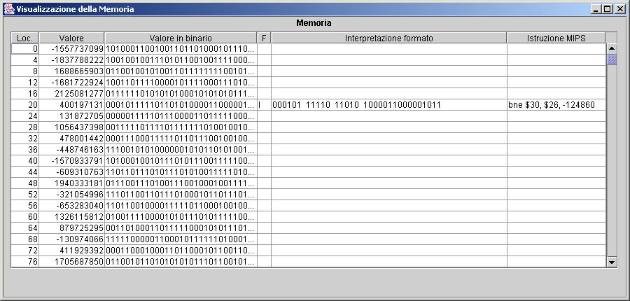
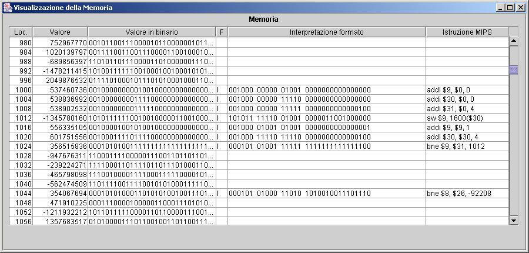

<html>

<head>
<meta http-equiv="Content-Language" content="it">
<meta http-equiv="Content-Type" content="text/html; charset=windows-1252">
<meta name="GENERATOR" content="Microsoft FrontPage 5.0">
<meta name="ProgId" content="FrontPage.Editor.Document">
<title>Simple Interpreter for MIPS (SIM): Help</title>
</head>

<body>

<h1 align="center">SIM: un <u>S</u>emplice <u>I</u>nterprete per il <u>M</u>ips</h1>

<h3 align="center">Vittorio Scarano</h3>

<p align="center">Dipartimento di Informatica ed Applicazioni &quot;R.M. Capocelli&quot;</p>

<p align="center">Università degli Studi di Salerno</p>

<p align="center">vitsca@dia.unisa.it</p>
<hr>
<h2><a name="Indice"></a>Indice</h2>
<p><a href="#Introduzione">1. Introduzione</a></p>
<p><a href="#Programmi_Mips_per_SIM">2.. I programmi MIPS per SIM</a></p>
<p><a href="#Come_si_usa_SIM">3. Come si usa SIM</a></p>
<hr>
<p align="left"><a href="#Indice">[Indice]</a></p>
<h2><a name="Introduzione"></a>1.Introduzione</h2>
<h3>1.1 A cosa serve il programma SIM</h3>
<p>SIM è un semplice programma offerto come supporto per
l'apprendimento della programmazione in Assembler MIPS nel corso di &quot;Architetture&quot; e
&quot;Fondamenti di Architetture&quot; del Corso di Laurea in Informatica (ed
Informatica Applicata) dell'Università
di Salerno.
Il programma permette la esecuzione di semplici programmi in Assembler MIPS (con
alcune limitazioni per semplificarne lo studio) visualizzando il comportamento
del programma sia per quanto riguarda l'accesso alla memoria che per quanto
riguarda l'uso dei registri. </p>
<p>Il programma è attualmente disponibile gratuitamente in versione 1.0  all'indirizzo <code>
<a href="http://www.dia.unisa.it/~vitsca/SIM">http://www.dia.unisa.it/~vitsca/SIM</a></code>. </p>
<h5>Il programma rappresenta un esempio di <i>charityware</i> (categoria 
inventata da me!) cioè di un programma disponibile gratuitamente (<i>freeware</i>) 
ma che stimola la donazione ad alcuni enti che si interessano di iniziative 
benefiche. La mia scelta è stata quella dell'UNICEF (<a href="http://www.unicef.it/">http://www.unicef.it</a>) 
e Emergency di Gino Strada (<a href="http://www.emergency.it/">http://www.emergency.it</a>). 
Entrambe le organizzazioni prevedono diverse modalità di donazione: da conto 
corrente postale, a carta di credito (on-line su un server sicuro) alla 
donazione via cellulare (con un SMS al costo di 1 euro).</h5>
<h4>Storia delle versioni</h4>
<ul>
  <li>6 Maggio 2003: prima release di SIM (1.0) con la nascita del sito </li>
  <li>14 Maggio 2003: release 1.01 (istruzione slti, linee di commento al 
  programma visualizzate nella finestra centrale)</li>
  <li>9 Dicembre 2004: release 1.1 (supporto per le istruzioni in virgola 
  mobile, vari bug risolti)</li>
  <li>13 Dicembre 2004: release 1.1.1 (alcuni bug risolti su addi/slti)</li>
</ul>
<p>&nbsp;</p>
<h3>1.2 Installazione&nbsp; </h3>
<h4>1.2.1. Requisiti per installazione </h4>
<p>E' necessario avere installato correttamente il Java Development Kit (JDK)
oppure il Run-time Environment (JRE) versione 1.5&nbsp; presso
<a href="http://java.sun.com/j2se/1.5.0/download.jsp">
http://java.sun.com/j2se/1.5.0/download.jsp</a> (la versione 1.4.2 può anche 
andare bene, mentre la versione 1.3.x
sembra che crei qualche problema). Altri ambienti Java nelle varie
versioni e per diversi sistemi operativi sono disponibili al sito
<a href="http://java.sun.com/j2se/">http://java.sun.com/j2se/</a><code> </code>. </p>
<h4>1.2.2 Installazione </h4>
<h5>Windows</h5>
<p>Eseguire (con un doppio-click) il file di installazione <code>SIM.msi</code> 
che installerà uno shortcut sul desktop ed una directory SIM (sotto
<a href="file:///C:/Programmi">C:\Programmi</a>) che conterrà:</p>
<ul>
  <li>il file <code>SIM.jar</code> che contiene il programma; se così configurato alla
    installazione del JDK, allora basterà cliccare&nbsp; sulla icona per
    eseguire il programma, altrimenti, da shell, si dovrà digitare <code>&quot;java
    -jar SIM.jar&quot;</code>.</li>
  <li>la directory <code>Images</code> con immagini necessarie all'Help ed al programma</li>
  <li>la directory <code>Programmi</code> con alcuni programmi di esempio</li>
</ul>
<p>Per disinstallare il programma, andare nel Pannello di 
controllo/Installazione Applicazioni e selezionare il programma e premere il 
bottone che ne permette la disinstallazione.</p>
<h5>Linux</h5>
<p>Il programma viene distribuito nel file <code>SIM.zip</code> che si deve scompattare in una directory 
(ad esempio,&nbsp; <code>/usr/local/bin/SIM</code> sotto Linux). 
In questa directory si troverà </p>
<ul>
  <li>il file <code>SIM.jar</code> che contiene il programma; se così configurato alla
    installazione del JDK, allora basterà cliccare&nbsp; sulla icona per
    eseguire il programma, altrimenti, da shell, si dovrà digitare <code>&quot;java
    -jar SIM.jar&quot;</code>.</li>
  <li>la directory <code>Images</code> con immagini necessarie all'Help ed al programma</li>
  <li>la directory <code>Programmi</code> con alcuni programmi di esempio</li>
</ul>
<h3>1.3 Altre informazioni </h3>
<h3>1.3 Altre informazioni </h3>
<p>Potete spedire all'indirizzo <a href="mailto:vitsca@unisa.it">vitsca@dia.unisa.it</a> commenti e suggerimenti.
Particolarmente gradite sono le segnalazioni di bug e di malfunzionamenti; in
questo caso si prega di descrivere in maniera completa quello che è accaduto,
allegando il programma MIPS che genera l'errore, informazioni sulla
configurazione (versione del Sistema Operativo, versione del JDK usato, etc.). </p>
<p><a href="#Indice">[Indice]</a> </p>
<hr>
<p><a href="#Indice">[Indice]</a> </p>
<h2><a name="Programmi_Mips_per_SIM"></a>2. I programmi MIPS per SIM </h2>
<h3>2.1 Istruzioni MIPS implementate</h3>

<p>SIM è in grado di eseguire un insieme ristretto di istruzioni MIPS. Le
istruzioni implementate sono:</p>

<ul>
  <li>Formato R:
    <ul>
      <li>
        <pre>add, sub, slt, mult, div, mfhi, mflo</pre>
      </li>
    </ul>
  </li>
  <li>Formato I
    <ul>
      <li>
        <pre>lw, sw, beq, bne, addi, slti</pre>
      </li>
    </ul>
  </li>
  <li>Formato J
    <ul>
      <li>
        <pre>j</pre>
      </li>
    </ul>
  </li>
</ul>

<h3><span style="font-size:14.0pt;mso-bidi-font-size:10.0pt;
mso-ansi-language:IT">2.2 Parametri all'interprete<o:p>
</o:p>
</span></h3>
<p class="MsoNormal"><span style="mso-ansi-language:IT">I parametri
all'interprete possono essere passati solamente sulle prime linee del programma
(dette linee di direttiva). Una linea di direttiva inizia con il simbolo %
(percento). Le direttive possibili sono:<o:p>
&nbsp;
</span></p>
<h4><span style="mso-ansi-language: IT">2.2.1 Direttiva per la memorizzazione.&nbsp;</span></h4>
<p class="MsoNormal"><span style="mso-ansi-language: IT">Questa direttiva serve
a definire </span><span style="mso-ansi-language:IT"> la locazione di memoria a partire dalla quale viene memorizzato il
programma. Se presente, deve essere la prima direttiva del file. In caso non sia
presente il programma verrà caricato a partire dalla locazione 0. La direttiva
è preceduta da un carattere di % (percento) ed è</span></p>
<pre><span style="mso-ansi-language:IT">	% start = &lt;locazione di memoria&gt;<o:p> </o:p></span></pre>
<p><span style="mso-ansi-language:IT">Ad esempio per indicare che il programma
che segue deve essere caricato a partire dalla locazione 2000 si deve inserire
come prima linea:</span></p>
<pre><span style="mso-ansi-language:IT"><span style="mso-tab-count: 1">	</span>% start = 2000<o:p> </o:p></span></pre>
<h4><span style="mso-ansi-language:IT">2.2.2 Direttive per la definizione di etichette
(label)</o:p>
</span></h4>
<p class="MsoNormal"><span style="mso-ansi-language:IT">E' possibile definire
delle etichette (per usarle sia nelle istruzioni <code>lw/sw</code> sia come etichette per le
istruzioni di salto condizionato o incondizionato) con la direttiva
</span></p>
<pre><span style="mso-ansi-language: IT">	</span><span style="mso-ansi-language:IT">% &lt;label&gt; = &lt;locazione di memoria&gt;<o:p> </o:p></span></pre>
<p class="MsoNormal"><span style="mso-ansi-language:IT">che
definisce il valore della &lt;label&gt;<span style="mso-spacerun: yes">&nbsp; </span>a
&lt;locazione di memoria&gt;<o:p>. Ad esempio la seguente istruzione definisce
una etichetta ASTART con valore 1000: </o:p>
</span></p>
<pre><span style="mso-ansi-language:IT"><span style="mso-tab-count:
1">&nbsp;&nbsp;&nbsp;&nbsp;&nbsp;&nbsp;&nbsp;&nbsp;</span>% ASTART = 1000<o:p> </o:p></span></pre>
<p class="MsoNormal"><span style="mso-ansi-language:IT">&nbsp;<o:p></o:p>Ogni
etichetta deve essere una stringa (nessuno spazio) che inizi con un carattere
alfabetico, mentre la locazione di memoria deve essere un intero.</span><span style="mso-ansi-language:IT"></o:p>
</span></p>
<h3><span style="font-size:14.0pt;mso-bidi-font-size:10.0pt;
mso-ansi-language:IT">2.3 Descrizione del programma</span></h3>
<p class="MsoNormal"><span style="mso-ansi-language:IT">E' possibile scrivere 
una breve descrizione del programma, facendo precedere alla prima istruzione 
linee precedute dal simbolo #. Queste linee verranno visualizzate nella finestra 
centrale, in basso a destra. Altri commenti su linea singola presenti 
all'interno del programma vengono ignorati e non visualizzati, né sulla finestra 
della descrizione né nella finestra relativa alle linee di programma. 
Ovviamente, invece, i commenti ad ogni singola istruzione sono visualizzati nel 
programma.
</span></p>
<p><a href="#Indice">[Indice]</a></p>
<hr>
<p><a href="#Indice">[Indice]</a></p>
<h2><a name="Come_si_usa_SIM"></a>3. Come si usa SIM</h2>
<p align="center"><font size="2"><i>Nota: le immagini di questa sezione si 
riferiscono alla versione 1.0 di SIM. In più, la versione 1.1 offre i due 
registri Hi e Lo per le operazioni in virgola mobile, situati dopo il registro 
31 nella finestra dei registri. Inoltre, esiste (accanto alle etichette) una 
finestra che contiene la descrizione del programma.</i></font></p>
<h3>3.1 La finestra principale di SIM</h3>
<p>Appena lanciato, il programma si presenta con la seguente finestra:</p>
<p> </p>
<p>Questa finestra rappresenta lo stato dell'interprete quando nessun programma
è stato caricato. Distinguiamo, innanzitutto, le regioni della finestra che
viene presentata all'utente. A sinistra e a destra si trova lo stato della
macchina MIPS: a sinistra troviamo la lista dei 32 registri con i valori
presenti nei registri, mentre a destra si trova invece la memoria a parole di 32
bit, quindi indirizzate con indirizzi &quot;alla parola&quot; (cioè multipli di
4). Al centro si trova, invece, la regione della finestra relativa al programma:
in alto verrà mostrato il programma quando viene caricato mentre in basso si
trova la tabella dei simboli del programma (valori delle etichette definite nel
programma). Sopra alle regioni relative allo stato dell'interprete ed al
programma MIPS si trova la regione relativa alla esecuzione del programma.
Questa regione contiene alcuni pulsanti, che servono per poter eseguire il programma, per poterne eseguire solamente
un passo (cioè una istruzione) e per poter fermare il programma, la indicazione
del valore del
Program Counter e lo status della macchina MIPS. Notate che tutte le regioni di
questa finestra riflettono il fatto che nessun programma sia stato caricato: i
pulsanti di esecuzione non sono attivi, e i registri, la memoria ed il Program
Counter non visualizzano valori.</p>
<h3>3.2 Esecuzione di un programma</h3>
<p>Il Programma SIM è stato progettato come un simulatore del processore MIPS e
quindi per scrivere i programmi MIPS è necessario utilizzare un qualsiasi
editor di testo. Un programma MIPS deve essere scritto in un file che deve avere
estensione <code>.mips</code></p>
<h4>3.2.1 Caricamento di un programma</h4>
<p>Per poter caricare un programma si deve selezionare dal menù File la voce
Open. Questo aprirà una finestra del tipo:</p>

<p align="center"> </p>
<p>Come si vede la finestra visualizza i file di programmi MIPS (estensione .mips).
Basta selezionare un file, oppure scriverne il nome nella casella apposita e
premere il pulsante &quot;<code>Apri</code>&quot; per far caricare il programma. Per
continuare in questo esempio, supponiamo che nel file <code>esempio.mips</code> sia scritto
il seguente programma: </p>

<pre>% start = 1000

% ASTART = 1600

	addi $9, $0, 0 		# inizializzazione indice

	addi $30, $0, 0 	# inizializzazione spiazzamento

	addi $31, $0, 4 	# limite del ciclo

Ciclo: 	sw $9, ASTART($30) 

	addi $9, $9, 1 		# incremento indice

	addi $30, $30, 4 	# incremento dello spiazzamento

	bne $9, $31, 1012 	# se non abbiamo terminato</pre>

<p>Questo semplice programma usa la variabile nel registro $9 come indice che
varia tra 0 e 4 (memorizzato nel registro $31) e scrive, ad ogni iterazione, il
valore di $9 nelle locazioni 1600, 1604, 1608 e 1612.&nbsp; </p>

<p> A questo
punto lo schermo visualizzerà il programma caricato all'interno del simulatore
MIPS come nella seguente figura: </p>

<p align="center">
 </p>

<p>Si può notare come ora la regione della finestra relativa allo stato della
macchina (registri e memoria) sia stata inizializzata (con valori casuali). In
particolar modo si noti come, secondo le specifiche MIPS, il registro $0 contiene il valore
0: qualsiasi operazione di modifica del registro $0 non otterrà alcun esito. Al centro,
nella regione relativa al programma, compare il programma caricato (il cui
pathname compare in alto) e la
corrispondente tabella dei simboli in basso. Il Program Counter è inizializzato
al valore 1000 (a causa del la direttiva all'interprete <code>% start = 1000</code>) ed indica
la locazione della istruzione che verrà eseguita nel momento in cui
eseguiremo il programma.&nbsp;&nbsp; </p>
<h4>3.2.2 Esecuzione normale</h4>
<p>Per eseguire il programma, basta premere il pulsante <code>Run</code> e il programma
verrà eseguito fino a quando il Program Counter punta oltre la locazione di
memoria dell'ultima istruzione. Durante la esecuzione, lo status diventerà
&quot;<code>Running..</code>&quot; ed il pulsante di &quot;<code>Stop</code>&quot; diventerà attivo (nel
caso il vostro programma vada in loop!). Quello che appare una volta che abbiamo eseguito
il programma sarà:</p>

<p align="center">
 </p>

<p>Da notare che, scorrendo la finestra della memoria (usando la apposita barra sulla destra) e
posizionandoci sulla locazione 1600 e seguenti, il valore di queste locazioni di
memoria è stato modificato dal programma. Inoltre, il Program Counter è stato
rimesso nella posizione di inizio per permettere una altra esecuzione del
programma oppure per potere eseguire il programma passo-passo, come vedremo nel
prossimo paragrafo.&nbsp;</p>
<h4>3.2.3 Esecuzione passo-passo</h4>
<p>E' possibile anche eseguire passo-passo il programma in modo da evidenziare
il comportamento di ciascuna istruzione. A questo scopo, proviamo ad eseguire lo
stesso programma <code>esempio.mips</code> visto in precedenza. Una volta caricato il
programma (oppure al termine della esecuzione precedente) possiamo&nbsp; premere
il pulsante &quot;<code>Step</code>&quot; che fa eseguire la prima linea del programma (cioè
la istruzione memorizzata nella parola il cui indirizzo è nel Program Counter).
Ad ogni passo, viene evidenziata sia la prossima linea del programma da eseguire
sia i registri e le locazioni di memoria eventualmente interessate dalla
esecuzione della istruzione, in maniera da permettere di riconoscere
immediatamente le eventuali modifiche apportate ai registri ed alla memoria. Ad
esempio, eseguendo la prima istruzione del programma si ottiene la seguente
schermata:</p>

<p align="center">
 </p>

<p align="left">Possiamo notare che la esecuzione della prima linea del
programma abbia messo a zero il registro $9 mentre la esecuzione della prossima
linea di programma influenzerà i registri 0 e 31. Lo status indica che la
macchina sta eseguendo un programma in modalità passo-passo (<code>Status: Stepping</code>).
Inoltre, è possibile fermare la esecuzione del programma premendo il tasto
<code>Stop</code>. </p>

<p align="left">Un altro esempio è mostrato in basso (seconda iterazione del
ciclo) e si vede che la prossima istruzione (alla locazione 1012) utilizzerà il
registro $9 e $30 e la locazione 1604 (<code>ASTART</code> + il valore contenuto in $30). </p>

<p align="center">
 </p>



<p>&nbsp;</p>
<h3><span style="mso-ansi-language:IT">3.3 Modifiche al valore dei registri e della
memoria<o:p>
</o:p>
</span></h3>
<p class="MsoNormal"><span style="mso-ansi-language:IT">E’ possibile
modificare i valori presenti nei registri e nelle locazioni di memoria mediante
editing (oltre che, ovviamente, tramite la esecuzione di istruzioni MIPS). Per editare, ad esempio, il valore di un
registro basta selezionare (cliccando) il registro: la finestra del valore del registro
selezionato prenderà lo sfondo bianco ed, a questo punto, è possibile
introdurre un valore utilizzando la tastiera (le cifre inserite verranno
inserite a partire dalla parte destra). I tasti e gli shortcut normalmente
disponibili dal sistema operativo sono disponibili (ad esempio Backspace,
Cut/Paste, etc.) così come è possibile, cliccando con il mouse, spostare il
cursore in una certa posizione in modo da poter inserire cifre in quella
posizione.
Le stesse modifiche sono possibili per le locazioni di memoria (con le eccezioni
presentate successivamente). Nel caso si introducano valori non corretti
(caratteri non numerici, valori troppo grandi (in valore assoluto) la cornice
del registro/memoria assume un colore rosso.</span><span style="mso-ansi-language:IT">

<p align="center"> </p>

 L’editing è possibile sia prima della esecuzione di un programma (mediante
&quot;<code>Run</code>&quot;) sia durante ogni passo della esecuzione passo-passo.</span>
<p class="MsoNormal"><span style="mso-ansi-language:IT">La modifica è possibile
su tutti i registri e le locazioni di memoria con le seguenti
eccezioni:&nbsp;</span></p>
<ul>
  <li>
    <p class="MsoNormal"><span style="mso-ansi-language:IT"> non è possibile editare il valore del registro $0 (che viene sempre
mantenuto a valore 0); inoltre, anche se istruzioni cercano di modificare il
    valore del registro $0, il valore non cambia e rimane a 0;&nbsp;</span></li>
  <li>
    <p class="MsoNormal"><span style="mso-ansi-language:IT"> non è
possibile editare (e cambiare) il valore delle locazioni di memoria dove è memorizzato il
programma.<o:p>
</o:p>
    </span></li>
</ul>
<p class="MsoNormal"><a href="#Indice">[Indice]</a></p>
<h3><span style="mso-ansi-language:IT">3.4 La finestra di dettaglio della
memoria<o:p>
</o:p>
</span></h3>
<p class="MsoNormal"><span style="mso-ansi-language:IT">Selezionando il menù
View è possibile ottenere la visualizzazione dettagliata </span><span style="mso-ansi-language: IT">sia
della memoria che dei registri. Illustriamo qui quella relativa alla memoria, in
quanto è simile quella dei registri. </span><p class="MsoNormal"><span style="mso-ansi-language: IT">La
finestra che viene visualizzata è la seguente</span>

<p align="center">
 </p>


Questa finestra mostra tutte le locazioni di memoria fornendo, oltre alla locazione
e valore, anche il valore in binario della parola a&nbsp; 32 bit. Nella colonna
successiva viene mostrato il formato della istruzione, se esso viene
riconosciuto. Come si vede, ad esempio, solamente la locazione 20 presenta un
valore che viene riconosciuto come una istruzione di formato I mentre le altre
non sono riconosciute (ricordiamo che la memoria viene inizializzata con valori
casuali). Per le istruzioni riconosciute viene anche fornita la interpretazione,
secondo il formato, della stringa binaria evidenziando, quindi, i campi della
istruzione. Infine, sempre solamente per le istruzioni riconosciute, viene
fornita la istruzione MIPS corrispondente.<p>Come altro esempio (mostrato nella
figura successiva), possiamo andare a vedere (dopo avere caricato il
programma di esempio precedentemente visto <code>esempio.mips</code>) le locazioni di memoria
che corrispondono alle locazioni di memoria dove abbiamo caricato il programma,
vale a dire dalla locazione 1000 in poi. La finestra mostra le seguenti informazioni:

<p align="center">
 </p>

Si può notare che il programma viene
caricato nelle locazioni di memoria specificate. Il programma (ricordiamo) è:

<pre>% start = 1000

% ASTART = 1600

	addi $9, $0, 0 		# inizializzazione indice

	addi $30, $0, 0 	# inizializzazione spiazzamento

	addi $31, $0, 4 	# limite del ciclo

Ciclo: 	sw $9, ASTART($30) 

	addi $9, $9, 1 		# incremento indice

	addi $30, $30, 4 	# incremento dello spiazzamento

	bne $9, $31, 1012 	# se non abbiamo terminato</pre>

e di fatto, si può notare come (ad esempio) la istruzione nella locazione 1012
contiene il valore 1600 che corrisponde all'utilizzo della etichetta definita
ASTART all'interno del programma. Inoltre, la istruzione di branch presente
nella locazione 1012 presenta correttamente il valore -4 nei 16 bit meno
significativi: infatti per effettuare un salto alla locazione 1012 si memorizza
il numero di word di cui si deve saltare, tenendo presente che il Program
Counter già è estato incrementato e quindi, durante la esecuzione della
istruzione, vale 1028. Quindi, il valore di -4 indica che si deve saltare di 4
word all'indietro, partendo da 1028 e quindi alla locazione 1012. 

</body>

</html>